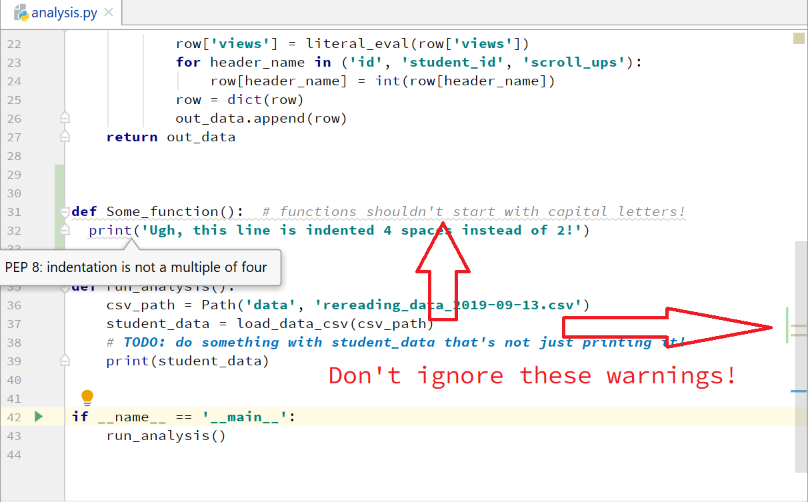
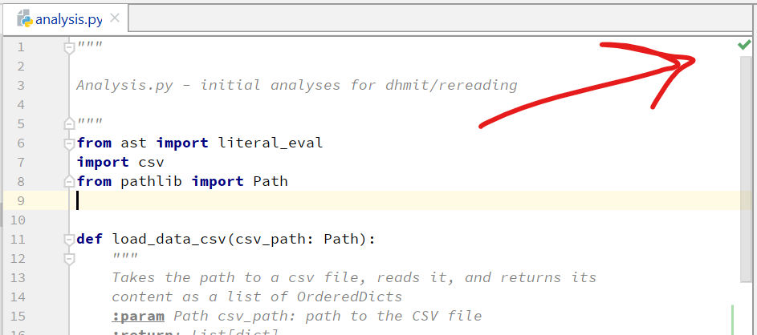

2019-09-20 Lab Session
We'll start working in earnest on data collection through the webapp that we're creating this semester on 9/27. Until then, we'll continue work on the analysis projects that we started in the Friday session 9/13.
Please continue to meet between now and then with your group to work, coordinating via Slack.
The goal for this guide is to introduce the way that we'll be writing real project code, which requires good style, documentation, and testing.
First!
When you next update your analysis branch from master, you'll probably encounter some merge conflicts between
your code and the changes I've made to analysis/analysis.py. Do not fear! Resolve these conflicts
so that you keep both the changes that I've made and your existing changes, in the same manner as in the
last lab session guide.
Good Style
Before you do anything else, make sure the code that you've written so far follows the lab style guide. We follow PEP 8, which is the Python standard style guide. The actual style guide is worth a skim at some point in your career, but happily PyCharm enforces PEP 8 automatically.
Always be aware of the yellow warnings in the right margin and the grey squiggles under your code: do not get in the habit of letting them slide to fix later. These are indications both of style problems and of potentially incorrect code. You can mouseover the warnings to see the problem, and if you click on the little lightbulb that appears, PyCharm can often fix these style problems automatically.

Good style may seem merely cosmetic, but it's essential for a large project for everyone to follow the same style, so that the codebase is consistent and readable.
If everything's good, you should see this green checkmark in the top righthand corner of your editor panel.

Our CI system checks for adherence to the style guide, and PRs that do not follow the style guide will be rejected automatically.
Factor your code out of the common code
Your group may have written your analysis code directly in the template run_analysis() function.
You should now factor your code out of this function into another function that takes student_data
as an argument, and returns your results rather than printing them.
For example, your analysis might start out looking something like this:
def run_analysis():
csv_path = Path('data', 'rereading_data_2019-09-13.csv')
student_data = load_data_csv(csv_path)
total_view_time = 0
for row in student_data:
for view_time in row['views']:
total_view_time += view_time
print(total_view_time)
Factor your analysis out, so it looks more like this:
def compute_total_view_time(student_data):
total_view_time = 0
for row in student_data:
for view_time in row['views']:
total_view_time += view_time
return total_view_time
def run_analysis():
csv_path = Path('data', 'rereading_data_2019-09-13.csv')
student_data = load_data_csv(csv_path)
total_view_time = compute_total_view_time(student_data)
print(f'The total view time of all students was {total_view_time}.')Document your code
Now that your analysis is factored out into its own function, give it a docstring. PEP 257 is a basic guide to writing good docstrings. In a nutshell, someone should be able to read your docstring and know at a glance: - what the function does - what its expected inputs are - what its expected outputs are
Keep in mind that the intended audience of your docstring is not you, right now, but rather your colleagues (making it easier for them to use your code) and you, three months from now, when you've completely forgotten that you'd ever even written this thing.
If you start typing three double quotes and hit enter under your function definition, PyCharm
should automatically create a :param field for each argument to your function
and a `:return``` field. This format is both for clarity and so that tools that automatically
create publishable documentation out of our docstrings can read the inputs and outputs to our
functions. If PyCharm doesn't do this, see my example below.
My analysis function now looks like this:
def compute_total_view_time(student_data):
"""
Given a list of student response dicts,
return the total time (across all users) spent reading the text
:param student_data: list, student response dicts
:return: float, the total time all users spent reading the text
"""
total_view_time = 0
for row in student_data:
for view_time in row['views']:
total_view_time += view_time
return total_view_timeTest your code
As a project grows in complexity, code gets refactored and rewritten, and as the number of connections within the codebase grows, bugs can sneak in. Testing is a way to check that our codebase remains correct as it evolves. It is also a way to force ourselves to think about edge cases in our code that we might have not handled.
There are a number of testing tools we'll use throughout the project; here, we introduce Python's builtin unittest library, a version of which we'll eventually use to test our Django backend code.
Near the bottom of the analysis.py file you should see a new class TestAnalysisMethods,
which subclasses unittest.TestCase. You'll also notice that the if __name__ == '__main__' block now contains a call to run the tests.
class TestAnalysisMethods(unittest.TestCase):
def setUp(self):
test_data_path = Path('data', 'test_data.csv')
self.test_student_data = load_data_csv(test_data_path)
def test_compute_total_view_time(self):
total_view_time = compute_total_view_time(self.test_student_data)
self.assertEqual(total_view_time, 6.385)
# check it doesn't crash on empty views field
no_views_student_data = [
{'views': []},
]
compute_total_view_time(no_views_student_data)
if __name__ == '__main__':
run_analysis()
unittest.main()When this test case is run by the test runner, it first calls the setUp() method, followed by
all the tests defined in it, which must have names starting with test_.
You'll notice in our setUp() method, we're loading some test data, instead of running our tests
on the full dataset. This is to avoid coupling our tests to the current state of the actual data, which
will change as we collect more: this practice of creating artificial data for your tests is known
as creating 'test fixtures'.
def setUp(self):
test_data_path = Path('data', 'test_data.csv')
self.test_student_data = load_data_csv(test_data_path)Take a moment to read the test we've already written test_compute_total_view_time. The main
feature of the test is that it calls our function on the test data, and asserts that the result
is equal to our predicted result. You can find a list of assertions that you can make in a Python
unittest test here.
def test_compute_total_view_time(self):
total_view_time = compute_total_view_time(self.test_student_data)
self.assertEqual(total_view_time, 6.385)
# check it doesn't crash on empty views field
no_views_student_data = [
{'views': []},
]
compute_total_view_time(no_views_student_data)You'll also notice that for my test, I wrote an additional mini piece of test data. As I was writing
the test, I realized I wasn't sure if I had correctly handled the case in which the views
field contains an empty list, so I added this to my test. Turns out I had, so no problem,
but if I hadn't, this would have been an opportunity to go back and improve the robustness
of my function.
Once understand what's going on in the included test code, write a unit test for your analysis function. See if you can find an edge case that breaks your function and improve it.
Make a PR
Once your code is cleaned up, refactored, documented, and tested, make a PR, so that we can
merge it into the master branch.